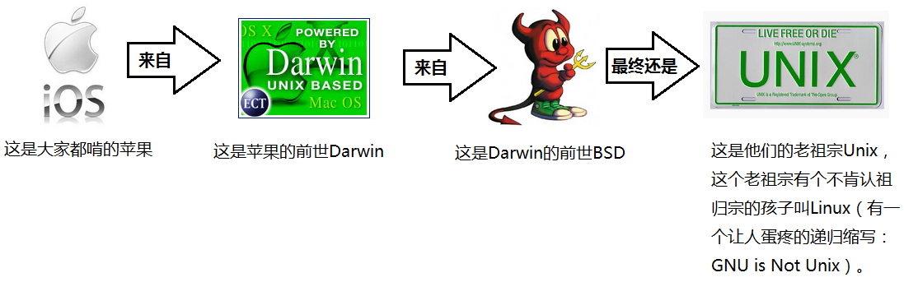
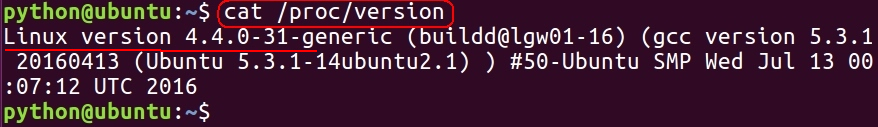
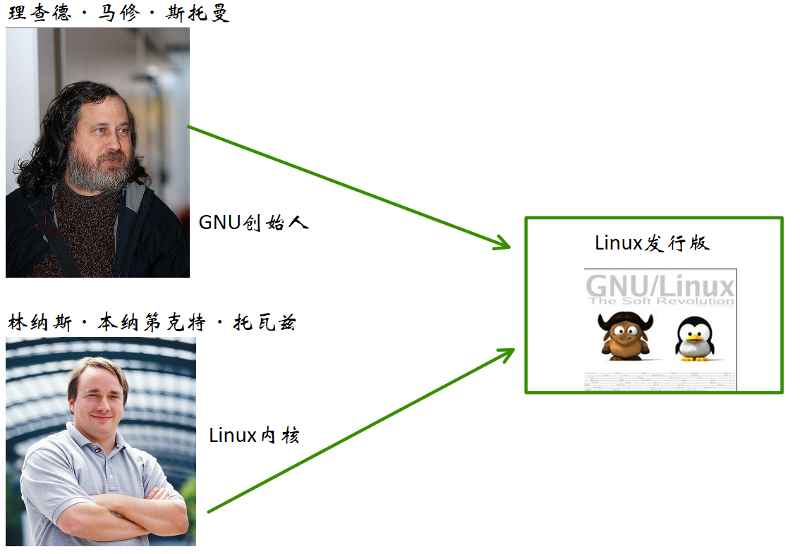
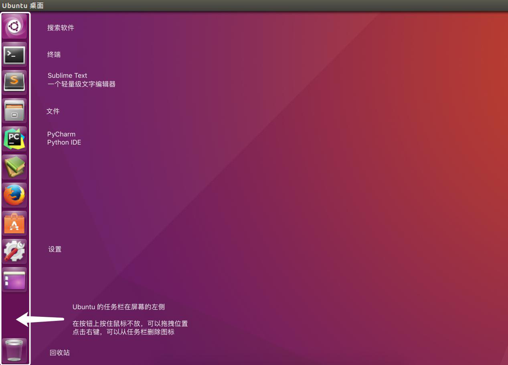
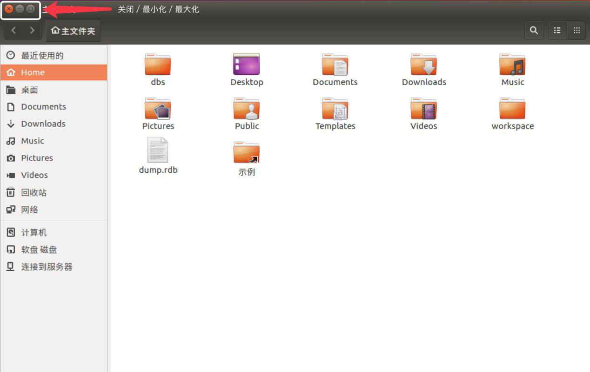
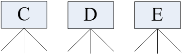
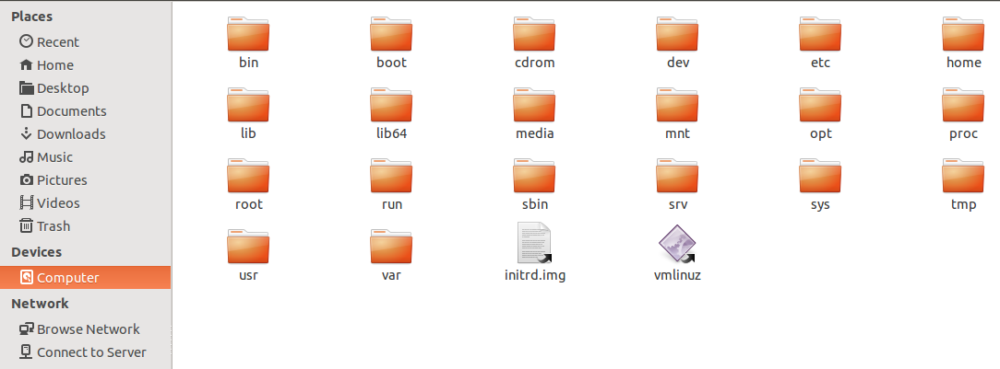
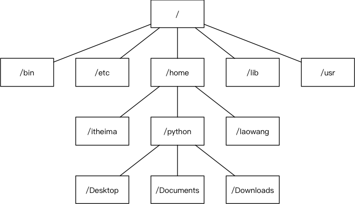

1.2.1 Linux用户
1.2.1.1 Linux的两类用户
1.2.1.2 Linux的远亲

1.2.2 Linux内核及发行版
1.2.2.1 Linux内核版本
内核(kernel)是系统的心脏，是运行程序和管理像磁盘和打印机等硬件设备的核心程序，它提供了一个在裸设备与应用程序间的抽象层。
Linux内核版本又分为稳定版和开发版，两种版本是相互关联，相互循环：
- 稳定版：具有工业级强度，可以广泛地应用和部署。新的稳定版相对于较旧的只是修正一些bug或加入一些新的驱动程序。
- 开发版：由于要试验各种解决方案，所以变化很快。
内核源码网址：https://www.kernel.org，所有来自全世界的对Linux源码的修改最终都会汇总到这个网站，由Linus领导的开源社区对其进行甄别和修改最终决定是否进入到Linux主线内核源码中。
内核版本查看： 
1.2.2.2 Linux发行版本
1) 发行版

Linux发行版 (也被叫做 GNU/Linux 发行版) 通常包含了包括桌面环境、办公套件、媒体播放器、数据库等应用软件。
发行版查看：
在几乎每一份与 Linux 有关的榜单上，基于 Debian 的 Ubuntu 都占有一席之位。Canonical 的Ubuntu 胜过其他所有的 Linux 服务器发行版 ―― 从简单安装、出色的硬件发现，到世界级的商业支持，Ubuntu确立了难以企及的严格标准。
2) Ubuntu 图形界面入门
Ubuntu 的任务栏： 
窗口操作按钮： 
窗口菜单条：
1.2.3 目录结构
1.2.3.1 Windows 和 Linux 文件系统区别
1) Windows文件系统
在 windows 平台下，打开“计算机”，我们看到的是一个个的驱动器盘符：

每个驱动器都有自己的根目录结构，这样形成了多个树并列的情形，如图所示：

2) Linux文件系统
在 Linux 下，我们是看不到这些驱动器盘符，我们看到的是文件夹（目录）： 
Linux 没有盘符这个概念，只有一个根目录 /，所有文件都在它下面： 
1.2.3.2 Linux目录结构
- /： 根目录，一般根目录下只存放目录，在 linux 下有且只有一个根目录，所有的东西都是从这里开始
- 当在终端里输入 /home，其实是在告诉电脑，先从 /（根目录）开始，再进入到 home 目录
- /bin、/usr/bin：可执行二进制文件的目录，如常用的命令 ls、tar、mv、cat 等
- /sbin、/usr/sbin、/usr/local/sbin：放置系统管理员使用的可执行命令，如 fdisk、shutdown、mount 等。与 /bin 不同的是，这几个目录是给系统管理员 root 使用的命令，一般用户只能"查看"而不能设置和使用
- /boot：放置 linux 系统启动时用到的一些文件，如 linux 的内核文件：/boot/vmlinuz，系统引导管理器：/boot/grub
- /dev：存放linux系统下的设备文件，访问该目录下某个文件，相当于访问某个设备，常用的是挂载光驱mount /dev/cdrom /mnt
- /etc：系统配置文件存放的目录，不建议在此目录下存放可执行文件，重要的配置文件有
- /etc/inittab
- /etc/fstab
- /etc/init.d
- /etc/X11
- /etc/sysconfig
- /etc/xinetd.d
- /home： 系统默认的用户家目录，新增用户账号时，用户的家目录都存放在此目录下
- ~ 表示当前用户的家目录
- ~/edu 表示用户 edu 的家目录
- /lib、/usr/lib、/usr/local/lib：系统使用的函数库的目录，程序在执行过程中，需要调用一些额外的参数时需要函数库的协助
- /lost+fount：系统异常产生错误时，会将一些遗失的片段放置于此目录下
- /mnt: /media：光盘默认挂载点，通常光盘挂载于 /mnt/cdrom 下，也不一定，可以选择任意位置进行挂载
- /opt：给主机额外安装软件所摆放的目录
- /proc：此目录的数据都在内存中，如系统核心，外部设备，网络状态，由于数据都存放于内存中，所以不占用磁盘空间，比较重要的文件有：/proc/cpuinfo、/proc/interrupts、/proc/dma、/proc/ioports、/proc/net/* 等
- /root：系统管理员root的家目录
- /tmp：一般用户或正在执行的程序临时存放文件的目录，任何人都可以访问，重要数据不可放置在此目录下
- /srv：服务启动之后需要访问的数据目录，如 www 服务需要访问的网页数据存放在 /srv/www 内
- /usr：应用程序存放目录
- /usr/bin：存放应用程序
- /usr/share：存放共享数据
- /usr/lib：存放不能直接运行的，却是许多程序运行所必需的一些函数库文件
- /usr/local：存放软件升级包
- /usr/share/doc：系统说明文件存放目录
- /usr/share/man：程序说明文件存放目录
- /var：放置系统执行过程中经常变化的文件
- /var/log：随时更改的日志文件
- /var/spool/mail：邮件存放的目录
- /var/run：程序或服务启动后，其 PID 存放在该目录下